# import required packages for this chapter
from pathlib import Path
import pandas as pd
import numpy as np
from sklearn.decomposition import PCA
from sklearn import preprocessing
import matplotlib.pylab as plt
import seaborn as sns
%matplotlib inlineChapter 4: Dimension Reduction
- 2019-2020 Galit Shmueli, Peter C. Bruce, Peter Gedeck
Data Mining for Business Analytics: Concepts, Techniques, and Applications in Python (First Edition) Galit Shmueli, Peter C. Bruce, Peter Gedeck, and Nitin R. Patel. 2019.
Date: 2020-03-08
Python Version: 3.8.2 Jupyter Notebook Version: 5.6.1
Packages: - matplotlib: 3.2.0 - numpy: 1.18.1 - pandas: 1.0.1 - seaborn: 0.10.0 - scikit-learn: 0.22.2
The assistance from Mr. Kuber Deokar and Ms. Anuja Kulkarni in preparing these solutions is gratefully acknowledged.
# Working directory:
#
# We assume that data are kept in the same directory as the notebook. If you keep your
# data in a different folder, replace the argument of the `Path`
DATA = Path('.')
# and then load data using
#
# pd.read_csv(DATA / ‘filename.csv’)Problem 4.1 Breakfast Cereals
Use the data for the breakfast cereals example in Section 4.8 to explore and summarize the data as follows:
4.1.a. Which variables are quantitative/numerical? Which are ordinal? Which are nominal?
# load the data
cereals_df = pd.read_csv(DATA / 'cereals.csv')
cereals_df.shape(77, 16)# variable types
cereals_df.dtypesname object
mfr object
type object
calories int64
protein int64
fat int64
sodium int64
fiber float64
carbo float64
sugars float64
potass float64
vitamins int64
shelf int64
weight float64
cups float64
rating float64
dtype: objectQuantitative variables: calories, protein, fat, sodium, fiber, carbo, sugars, potass, vitamins, weight, cups, shelf, and rating.
Nominal variables: type and mfr.
Ordinal Variables: shelf.
4.1.b. Compute the mean, median, min, max, and standard deviation for each of the quantitative variables. This can be done using pandas as shown in Table 4.3.
# data with just quantitative variables
quant_vars = ['calories', 'protein', 'fat', 'sodium', 'fiber', 'carbo', 'sugars', 'potass', 'vitamins', 'weight', 'cups',
'shelf', 'rating']
all_numeric_df = cereals_df[quant_vars]
pd.DataFrame({'mean': all_numeric_df.mean(),
'mediun': all_numeric_df.median(),
'min': all_numeric_df.min(),
'max': all_numeric_df.max(),
'sd': all_numeric_df.std(),
})| mean | mediun | min | max | sd | |
|---|---|---|---|---|---|
| calories | 106.883117 | 110.000000 | 50.000000 | 160.000000 | 19.484119 |
| protein | 2.545455 | 3.000000 | 1.000000 | 6.000000 | 1.094790 |
| fat | 1.012987 | 1.000000 | 0.000000 | 5.000000 | 1.006473 |
| sodium | 159.675325 | 180.000000 | 0.000000 | 320.000000 | 83.832295 |
| fiber | 2.151948 | 2.000000 | 0.000000 | 14.000000 | 2.383364 |
| carbo | 14.802632 | 14.500000 | 5.000000 | 23.000000 | 3.907326 |
| sugars | 7.026316 | 7.000000 | 0.000000 | 15.000000 | 4.378656 |
| potass | 98.666667 | 90.000000 | 15.000000 | 330.000000 | 70.410636 |
| vitamins | 28.246753 | 25.000000 | 0.000000 | 100.000000 | 22.342523 |
| weight | 1.029610 | 1.000000 | 0.500000 | 1.500000 | 0.150477 |
| cups | 0.821039 | 0.750000 | 0.250000 | 1.500000 | 0.232716 |
| shelf | 2.207792 | 2.000000 | 1.000000 | 3.000000 | 0.832524 |
| rating | 42.665705 | 40.400208 | 18.042851 | 93.704912 | 14.047289 |
4.1.c. Plot a histogram for each of the quantitative variables. Based on the histograms and summary statistics, answer the following questions:
# histograms for quantitative variables
for var in quant_vars:
#fig, axes = plt.subplots(nrows=1, ncols=2)
plt.hist(all_numeric_df[var].dropna())
plt.xlabel(var)
plt.show()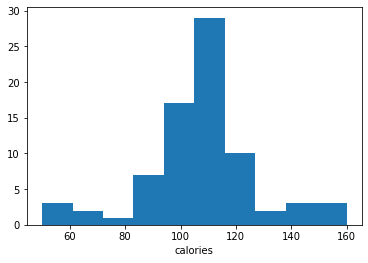
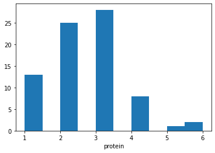
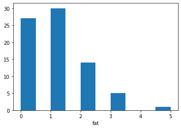
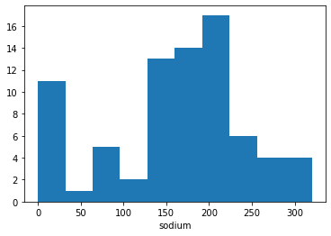
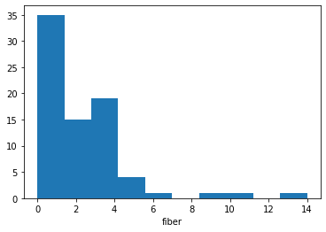
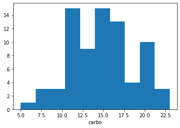
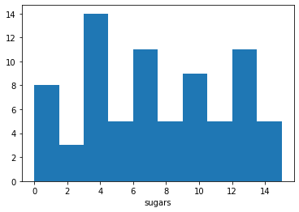
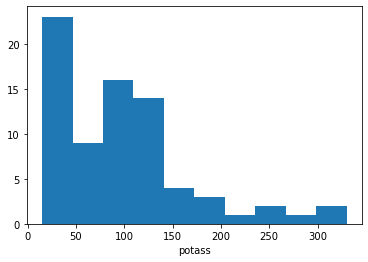
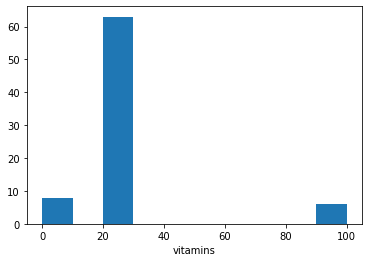
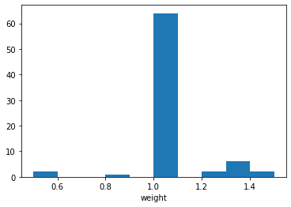
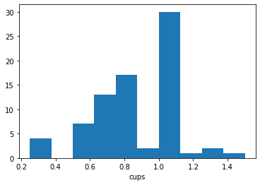
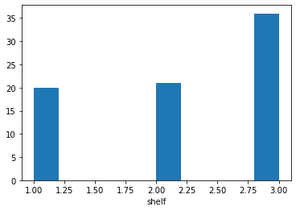
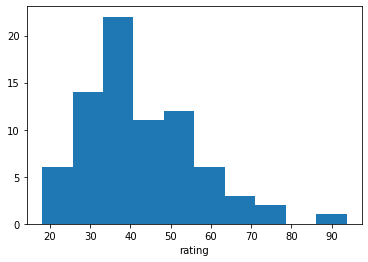
4.1.c.i. Which variables have the largest variability?
Sodium and Potass have the largest variability.
4.1.c.ii. Which variables seem skewed?
Variables Fiber, Potass and Rating are all positively skewed.
4.1.c.iii. Are there any values that seem extreme?
For the following variables, extreme values (outliers) are present:
Protein (extreme values are 5 and 6)
Fat (extreme value is 5)
Fiber (extreme values are 14, 10, 9 and 6)
Vitamins (extreme value is 100)
Weight (extreme values are 0.5, 1.33, 1.5)
Rating (extreme value is 93.7)
4.1.d. Plot a side-by-side boxplot comparing the calories in hot vs. cold cereals. What does this plot show us?
# side by side boxplot of calories in hot vs. cold cereals
ax = cereals_df.boxplot(column='calories', by='type')
ax.set_ylabel('calories')
plt.suptitle('') # Suppress the titles
plt.title('Distribution of Calories')Text(0.5, 1.0, 'Distribution of Calories')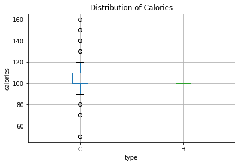
We see that in cold cereals, the different cereals vary in the amount of calories mainly between approximately 90-120, whereas all hot cereals have 100 calories.
4.1.e. Plot a side-by-side boxplot of consumer rating as a function of the shelf height. If we were to predict consumer rating from shelf height, does it appear that we need to keep all three categories of shelf height?
# side-by-side boxplot of consumer rating as a function of the shelf height
ax = cereals_df.boxplot(column='rating', by='shelf')
ax.set_ylabel('rating')
plt.suptitle('') # Suppress the titles
plt.title('Distribution of customer rating')Text(0.5, 1.0, 'Distribution of customer rating')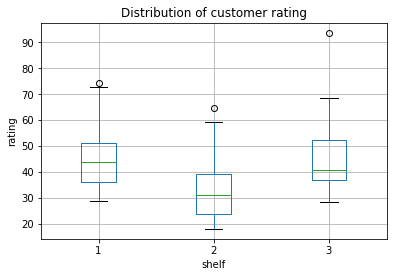
Not much of a story here - both minimum and maximum shelf height have similar ratings, middling height are rated lower.
4.1.f. Compute the correlation table for the quantitative variables (method corr()). In addition, generate a matrix plot for these variables (see Table 3.4 on how to do this using the seaborn library).
# correlation table for the quantitative variables
corr = all_numeric_df.corr()
corr| calories | protein | fat | sodium | fiber | carbo | sugars | potass | vitamins | weight | cups | shelf | rating | |
|---|---|---|---|---|---|---|---|---|---|---|---|---|---|
| calories | 1.000000 | 0.019066 | 0.498610 | 0.300649 | -0.293413 | 0.257638 | 0.566533 | -0.072063 | 0.265356 | 0.696091 | 0.087200 | 0.097234 | -0.689376 |
| protein | 0.019066 | 1.000000 | 0.208431 | -0.054674 | 0.500330 | -0.025012 | -0.291853 | 0.563706 | 0.007335 | 0.216158 | -0.244469 | 0.133865 | 0.470618 |
| fat | 0.498610 | 0.208431 | 1.000000 | -0.005407 | 0.016719 | -0.300003 | 0.302497 | 0.200445 | -0.031156 | 0.214625 | -0.175892 | 0.263691 | -0.409284 |
| sodium | 0.300649 | -0.054674 | -0.005407 | 1.000000 | -0.070675 | 0.297687 | 0.058866 | -0.042632 | 0.361477 | 0.308576 | 0.119665 | -0.069719 | -0.401295 |
| fiber | -0.293413 | 0.500330 | 0.016719 | -0.070675 | 1.000000 | -0.380357 | -0.138760 | 0.911528 | -0.032243 | 0.247226 | -0.513061 | 0.297539 | 0.584160 |
| carbo | 0.257638 | -0.025012 | -0.300003 | 0.297687 | -0.380357 | 1.000000 | -0.471184 | -0.365003 | 0.219202 | 0.138467 | 0.367460 | -0.192650 | 0.088712 |
| sugars | 0.566533 | -0.291853 | 0.302497 | 0.058866 | -0.138760 | -0.471184 | 1.000000 | 0.001414 | 0.098231 | 0.455844 | -0.048961 | 0.068377 | -0.763902 |
| potass | -0.072063 | 0.563706 | 0.200445 | -0.042632 | 0.911528 | -0.365003 | 0.001414 | 1.000000 | -0.005427 | 0.419933 | -0.501607 | 0.385784 | 0.416009 |
| vitamins | 0.265356 | 0.007335 | -0.031156 | 0.361477 | -0.032243 | 0.219202 | 0.098231 | -0.005427 | 1.000000 | 0.320324 | 0.128405 | 0.299262 | -0.240544 |
| weight | 0.696091 | 0.216158 | 0.214625 | 0.308576 | 0.247226 | 0.138467 | 0.455844 | 0.419933 | 0.320324 | 1.000000 | -0.199583 | 0.190762 | -0.298124 |
| cups | 0.087200 | -0.244469 | -0.175892 | 0.119665 | -0.513061 | 0.367460 | -0.048961 | -0.501607 | 0.128405 | -0.199583 | 1.000000 | -0.335269 | -0.203160 |
| shelf | 0.097234 | 0.133865 | 0.263691 | -0.069719 | 0.297539 | -0.192650 | 0.068377 | 0.385784 | 0.299262 | 0.190762 | -0.335269 | 1.000000 | 0.025159 |
| rating | -0.689376 | 0.470618 | -0.409284 | -0.401295 | 0.584160 | 0.088712 | -0.763902 | 0.416009 | -0.240544 | -0.298124 | -0.203160 | 0.025159 | 1.000000 |
4.1.f.i. Which pair of variables is most strongly correlated?
From the correlation matrix, fiber and potass are the most strongly (positively) correlated. Fat and calories are also positively correlated.
4.1.f.ii. How can we reduce the number of variables based on these correlations?
Pairs of variables that have a very strong (positive or negative) correlation contain duplicative information. Therefore, we can omit the variables that are strongly correlated to others. This will avoid multicolinearity.
4.1.f.iii. How would the correlations change if we normalized the data first?
Correlations are unaffected by the normalization of data.
4.1.g. Consider the first PC of the analysis of the 13 numerical variables in Table 4.11. Describe briefly what this PC represents.
The first column is the first principal component. It shows the weights that the different variables carry. We see that it is dominated by sodium (which has the highest weight). This implies that the 1st principal component is measuring how much sodium the cereal contains.
Problem 4.2 University Rankings.
The dataset on American college and university rankings (available from www.dataminingbook.com) contains information on 1302 American colleges and universities offering an undergraduate program. For each university, there are 17 measurements that include continuous measurements (such as tuition and graduation rate) and categorical measurements (such as location by state and whether it is a private or a public school).
# load the data and review
universities_df = pd.read_csv(DATA / 'Universities.csv')
universities_df.head()| College Name | State | Public (1)/ Private (2) | # appli. rec'd | # appl. accepted | # new stud. enrolled | % new stud. from top 10% | % new stud. from top 25% | # FT undergrad | # PT undergrad | in-state tuition | out-of-state tuition | room | board | add. fees | estim. book costs | estim. personal $ | % fac. w/PHD | stud./fac. ratio | Graduation rate | |
|---|---|---|---|---|---|---|---|---|---|---|---|---|---|---|---|---|---|---|---|---|
| 0 | Alaska Pacific University | AK | 2 | 193.0 | 146.0 | 55.0 | 16.0 | 44.0 | 249.0 | 869.0 | 7560.0 | 7560.0 | 1620.0 | 2500.0 | 130.0 | 800.0 | 1500.0 | 76.0 | 11.9 | 15.0 |
| 1 | University of Alaska at Fairbanks | AK | 1 | 1852.0 | 1427.0 | 928.0 | NaN | NaN | 3885.0 | 4519.0 | 1742.0 | 5226.0 | 1800.0 | 1790.0 | 155.0 | 650.0 | 2304.0 | 67.0 | 10.0 | NaN |
| 2 | University of Alaska Southeast | AK | 1 | 146.0 | 117.0 | 89.0 | 4.0 | 24.0 | 492.0 | 1849.0 | 1742.0 | 5226.0 | 2514.0 | 2250.0 | 34.0 | 500.0 | 1162.0 | 39.0 | 9.5 | 39.0 |
| 3 | University of Alaska at Anchorage | AK | 1 | 2065.0 | 1598.0 | 1162.0 | NaN | NaN | 6209.0 | 10537.0 | 1742.0 | 5226.0 | 2600.0 | 2520.0 | 114.0 | 580.0 | 1260.0 | 48.0 | 13.7 | NaN |
| 4 | Alabama Agri. & Mech. Univ. | AL | 1 | 2817.0 | 1920.0 | 984.0 | NaN | NaN | 3958.0 | 305.0 | 1700.0 | 3400.0 | 1108.0 | 1442.0 | 155.0 | 500.0 | 850.0 | 53.0 | 14.3 | 40.0 |
var = list(universities_df.columns)
var['College Name',
'State',
'Public (1)/ Private (2)',
"# appli. rec'd",
'# appl. accepted',
'# new stud. enrolled',
'% new stud. from top 10%',
'% new stud. from top 25%',
'# FT undergrad',
'# PT undergrad',
'in-state tuition',
'out-of-state tuition',
'room',
'board',
'add. fees',
'estim. book costs',
'estim. personal $',
'% fac. w/PHD',
'stud./fac. ratio',
'Graduation rate']# variable data types
universities_df.dtypesCollege Name object
State object
Public (1)/ Private (2) int64
# appli. rec'd float64
# appl. accepted float64
# new stud. enrolled float64
% new stud. from top 10% float64
% new stud. from top 25% float64
# FT undergrad float64
# PT undergrad float64
in-state tuition float64
out-of-state tuition float64
room float64
board float64
add. fees float64
estim. book costs float64
estim. personal $ float64
% fac. w/PHD float64
stud./fac. ratio float64
Graduation rate float64
dtype: object4.2.a. Remove all categorical variables. Then remove all records with missing numerical measurements from the dataset.
# remove all three categorical variables
var.remove('College Name')
var.remove('State')
var.remove('Public (1)/ Private (2)')all_numeric_df = universities_df[var]
all_numeric_df.shape(1302, 17)# drop missing values
all_numeric_df = all_numeric_df.dropna(how='any')
all_numeric_df.shape(471, 17)4.2.b. Conduct a principal components analysis on the cleaned data and comment on the results. Should the data be normalized? Discuss what characterizes the components you consider key.
# PCA
pcs = PCA()
pcs.fit(all_numeric_df)
# view the importance of principal components
pcsSummary_df = pd.DataFrame({'Standard deviation': np.sqrt(pcs.explained_variance_),
'Proportion of variance': pcs.explained_variance_ratio_,
'Cumulative proportion': np.cumsum(pcs.explained_variance_ratio_)})
pcsSummary_df = pcsSummary_df.transpose()
pcsSummary_df.columns = ['PC{}'.format(i) for i in range(1, len(pcsSummary_df.columns) + 1)]
pcsSummary_df.round(4)| PC1 | PC2 | PC3 | PC4 | PC5 | PC6 | PC7 | PC8 | PC9 | PC10 | PC11 | PC12 | PC13 | PC14 | PC15 | PC16 | PC17 | |
|---|---|---|---|---|---|---|---|---|---|---|---|---|---|---|---|---|---|
| Standard deviation | 7430.9140 | 5987.9890 | 1854.6412 | 1192.5293 | 967.4279 | 679.6527 | 596.9761 | 580.6299 | 417.6136 | 318.1272 | 188.8676 | 155.6062 | 19.0491 | 12.5287 | 11.0184 | 5.33 | 2.9059 |
| Proportion of variance | 0.5614 | 0.3645 | 0.0350 | 0.0145 | 0.0095 | 0.0047 | 0.0036 | 0.0034 | 0.0018 | 0.0010 | 0.0004 | 0.0002 | 0.0000 | 0.0000 | 0.0000 | 0.00 | 0.0000 |
| Cumulative proportion | 0.5614 | 0.9259 | 0.9609 | 0.9753 | 0.9848 | 0.9895 | 0.9932 | 0.9966 | 0.9984 | 0.9994 | 0.9997 | 1.0000 | 1.0000 | 1.0000 | 1.0000 | 1.00 | 1.0000 |
# Components
print('\nComponents')
pcsComponents_df = pd.DataFrame(pcs.components_.transpose(),columns=pcsSummary_df.columns, index=[var])
pcsComponents_df
Components| PC1 | PC2 | PC3 | PC4 | PC5 | PC6 | PC7 | PC8 | PC9 | PC10 | PC11 | PC12 | PC13 | PC14 | PC15 | PC16 | PC17 | |
|---|---|---|---|---|---|---|---|---|---|---|---|---|---|---|---|---|---|
| # appli. rec'd | 0.271883 | 0.551183 | 0.664458 | 0.129476 | -0.034246 | 0.370333 | -0.120305 | -0.097471 | -0.035166 | -0.009102 | -0.016696 | -0.008734 | 0.005788 | 0.000754 | -0.002059 | -0.001503 | -0.000081 |
| # appl. accepted | 0.194107 | 0.321299 | 0.190957 | -0.008357 | -0.076674 | -0.813924 | 0.353520 | 0.103440 | 0.075971 | -0.040233 | 0.103389 | 0.016789 | -0.011578 | -0.002453 | 0.003683 | 0.003584 | 0.000083 |
| # new stud. enrolled | 0.084730 | 0.101590 | -0.087451 | -0.055253 | -0.036068 | -0.081429 | 0.019293 | -0.039063 | 0.030435 | 0.170403 | -0.965233 | -0.008420 | 0.013475 | -0.002658 | -0.005389 | -0.006643 | -0.000082 |
| % new stud. from top 10% | -0.000898 | 0.001732 | 0.000136 | -0.001906 | 0.001236 | 0.009145 | -0.003462 | -0.002851 | -0.001772 | 0.003426 | -0.013176 | 0.004417 | -0.511022 | -0.251865 | 0.230605 | 0.781370 | 0.106686 |
| % new stud. from top 25% | -0.000811 | 0.001925 | 0.000040 | -0.002352 | 0.001009 | 0.007166 | -0.003192 | -0.002603 | -0.000749 | 0.001050 | -0.006792 | 0.007512 | -0.686812 | -0.225707 | 0.320215 | -0.610197 | -0.047794 |
| # FT undergrad | 0.458121 | 0.492263 | -0.635303 | -0.284582 | -0.080402 | 0.129196 | -0.127077 | 0.011595 | -0.021579 | -0.012258 | 0.152137 | -0.000211 | 0.001405 | 0.001129 | 0.000611 | 0.000641 | -0.000148 |
| # PT undergrad | 0.108253 | 0.073410 | -0.285353 | 0.942562 | -0.051743 | -0.039789 | -0.018146 | -0.073893 | -0.044043 | 0.031981 | 0.001279 | -0.003901 | -0.003181 | 0.001234 | 0.001414 | 0.000195 | 0.000120 |
| in-state tuition | -0.670187 | 0.382489 | -0.082787 | -0.016972 | -0.621759 | 0.000517 | -0.060641 | 0.006407 | -0.040511 | 0.070211 | 0.022783 | -0.003362 | 0.000362 | -0.000392 | -0.002251 | -0.000151 | 0.000114 |
| out-of-state tuition | -0.454535 | 0.428685 | -0.129410 | 0.018657 | 0.748634 | 0.010286 | 0.141481 | -0.091839 | -0.000236 | -0.056493 | -0.016404 | 0.005916 | 0.004394 | -0.000145 | 0.002655 | -0.000479 | 0.000308 |
| room | -0.033420 | 0.055584 | 0.040113 | 0.065120 | 0.115354 | -0.050083 | -0.314426 | 0.873995 | -0.318999 | -0.053459 | -0.065262 | -0.050179 | -0.001090 | -0.000420 | 0.000894 | -0.000278 | 0.000364 |
| board | -0.034236 | 0.040897 | -0.008232 | 0.067313 | 0.006301 | 0.067317 | -0.145646 | 0.276553 | 0.938293 | -0.095646 | -0.008915 | -0.025704 | -0.000158 | -0.002073 | 0.002044 | 0.000795 | -0.000196 |
| add. fees | 0.013209 | 0.008746 | 0.032868 | -0.012755 | 0.103097 | -0.024987 | -0.043534 | 0.068703 | 0.076206 | 0.972820 | 0.168601 | 0.001859 | 0.002655 | -0.002461 | 0.002785 | -0.001050 | 0.000424 |
| estim. book costs | -0.000058 | 0.003291 | 0.000316 | 0.010795 | -0.005223 | 0.034097 | 0.011155 | 0.064045 | 0.006482 | -0.002434 | -0.014164 | 0.997041 | 0.005360 | 0.001904 | -0.009205 | 0.000856 | 0.000313 |
| estim. personal $ | 0.037557 | 0.001185 | -0.054659 | 0.031666 | -0.106952 | 0.407928 | 0.835394 | 0.339141 | 0.002346 | 0.039237 | -0.013501 | -0.046075 | -0.001610 | 0.000984 | -0.000207 | -0.000442 | 0.000687 |
| % fac. w/PHD | -0.000205 | 0.001564 | -0.000995 | -0.000055 | 0.004822 | 0.000925 | -0.001184 | -0.000218 | 0.001612 | 0.002839 | 0.000403 | -0.006167 | -0.396144 | -0.066826 | -0.915632 | -0.009347 | -0.007621 |
| stud./fac. ratio | 0.000295 | -0.000159 | 0.000025 | -0.000135 | -0.000201 | -0.000748 | -0.000397 | -0.000359 | 0.000470 | -0.000638 | 0.000849 | -0.000424 | 0.012433 | 0.033745 | -0.014961 | -0.112121 | 0.992930 |
| Graduation rate | -0.001072 | 0.001397 | 0.000920 | -0.002172 | 0.001129 | 0.001077 | -0.001994 | -0.000387 | 0.001937 | 0.004057 | -0.007366 | 0.000551 | -0.331120 | 0.938075 | 0.074297 | 0.066329 | -0.019117 |
# PCA after normalizatin
pcs = PCA()
pcs.fit(preprocessing.scale(all_numeric_df))
# view the importance of principal components
pcsSummary_df = pd.DataFrame({'Standard deviation': np.sqrt(pcs.explained_variance_),
'Proportion of variance': pcs.explained_variance_ratio_,
'Cumulative proportion': np.cumsum(pcs.explained_variance_ratio_)})
pcsSummary_df = pcsSummary_df.transpose()
pcsSummary_df.columns = ['PC{}'.format(i) for i in range(1, len(pcsSummary_df.columns) + 1)]
pcsSummary_df.round(4)| PC1 | PC2 | PC3 | PC4 | PC5 | PC6 | PC7 | PC8 | PC9 | PC10 | PC11 | PC12 | PC13 | PC14 | PC15 | PC16 | PC17 | |
|---|---|---|---|---|---|---|---|---|---|---|---|---|---|---|---|---|---|
| Standard deviation | 2.2773 | 2.1449 | 1.0995 | 1.0336 | 0.9770 | 0.8738 | 0.8041 | 0.7736 | 0.7039 | 0.6629 | 0.6285 | 0.5503 | 0.4388 | 0.3042 | 0.2002 | 0.1745 | 0.1440 |
| Proportion of variance | 0.3044 | 0.2700 | 0.0710 | 0.0627 | 0.0560 | 0.0448 | 0.0380 | 0.0351 | 0.0291 | 0.0258 | 0.0232 | 0.0178 | 0.0113 | 0.0054 | 0.0024 | 0.0018 | 0.0012 |
| Cumulative proportion | 0.3044 | 0.5745 | 0.6454 | 0.7081 | 0.7642 | 0.8090 | 0.8469 | 0.8821 | 0.9111 | 0.9369 | 0.9601 | 0.9779 | 0.9892 | 0.9946 | 0.9970 | 0.9988 | 1.0000 |
# Components
print('\nComponents')
pcsComponents_df = pd.DataFrame(pcs.components_.transpose(),columns=pcsSummary_df.columns, index=[var])
pcsComponents_df
Components| PC1 | PC2 | PC3 | PC4 | PC5 | PC6 | PC7 | PC8 | PC9 | PC10 | PC11 | PC12 | PC13 | PC14 | PC15 | PC16 | PC17 | |
|---|---|---|---|---|---|---|---|---|---|---|---|---|---|---|---|---|---|
| # appli. rec'd | 0.078361 | 0.420164 | -0.031982 | 0.072621 | -0.016694 | 0.112320 | -0.268145 | -0.093570 | 0.039628 | -0.087361 | -0.073021 | -0.009995 | 0.602996 | 0.198790 | 0.346774 | -0.344637 | -0.246354 |
| # appl. accepted | 0.023659 | 0.434471 | -0.031423 | 0.118128 | -0.089073 | 0.114381 | -0.266285 | -0.080991 | 0.022795 | 0.035197 | -0.166046 | -0.062100 | 0.251257 | -0.240232 | -0.452347 | 0.429830 | 0.392238 |
| # new stud. enrolled | -0.028802 | 0.445556 | -0.038651 | -0.031466 | -0.075981 | 0.054079 | -0.098870 | -0.058138 | 0.096336 | 0.019353 | -0.072613 | 0.013719 | -0.486306 | 0.059301 | -0.322663 | -0.010969 | -0.645721 |
| % new stud. from top 10% | 0.354028 | 0.093547 | -0.120129 | -0.372457 | 0.162260 | -0.004445 | 0.102709 | -0.112334 | 0.028676 | -0.326675 | 0.209275 | -0.043489 | -0.003825 | 0.646399 | -0.185719 | 0.168396 | 0.171236 |
| % new stud. from top 25% | 0.340496 | 0.118396 | -0.142720 | -0.385565 | 0.158187 | 0.092636 | 0.136409 | -0.039927 | -0.006007 | -0.314110 | 0.234355 | 0.010823 | 0.037524 | -0.685605 | 0.088571 | -0.055470 | -0.105283 |
| # FT undergrad | -0.049586 | 0.443583 | -0.004012 | -0.056459 | -0.094781 | 0.043504 | -0.043157 | -0.043464 | 0.034858 | -0.009057 | -0.061392 | 0.050779 | -0.512673 | 0.012862 | 0.441354 | -0.217176 | 0.519944 |
| # PT undergrad | -0.106380 | 0.287700 | 0.265769 | 0.053495 | -0.343681 | -0.188041 | 0.509297 | -0.122490 | 0.172351 | 0.225459 | 0.531642 | -0.107999 | 0.168015 | -0.006459 | -0.036556 | 0.009390 | 0.003856 |
| in-state tuition | 0.379389 | -0.150248 | 0.084350 | 0.041064 | -0.172639 | -0.000539 | -0.129328 | 0.009974 | 0.092325 | 0.103905 | -0.044406 | -0.497755 | -0.066563 | -0.041638 | -0.355983 | -0.592824 | 0.157093 |
| out-of-state tuition | 0.402555 | -0.048728 | 0.051577 | 0.077658 | -0.158499 | -0.044407 | -0.077965 | -0.010688 | 0.044615 | 0.151510 | -0.099283 | -0.507936 | -0.101073 | 0.006317 | 0.449517 | 0.507584 | -0.175592 |
| room | 0.273165 | 0.052271 | 0.250578 | 0.454416 | -0.004482 | -0.015068 | -0.122402 | -0.091329 | -0.680595 | -0.180139 | 0.308060 | 0.153113 | -0.120440 | 0.004846 | -0.027487 | -0.009710 | -0.020306 |
| board | 0.290437 | 0.010051 | 0.252096 | 0.301620 | -0.199067 | -0.038477 | 0.152138 | 0.466412 | 0.421339 | -0.419434 | -0.181506 | 0.302579 | -0.004475 | 0.001880 | -0.011574 | 0.033039 | 0.004999 |
| add. fees | -0.012351 | 0.169499 | -0.249747 | 0.446562 | 0.648920 | -0.418437 | 0.082359 | 0.048174 | 0.205132 | -0.013333 | 0.098383 | -0.214784 | -0.043950 | -0.039396 | -0.006340 | -0.039115 | 0.030237 |
| estim. book costs | 0.057302 | 0.056689 | 0.652241 | -0.044356 | 0.518644 | 0.421195 | 0.190728 | -0.130177 | 0.078975 | 0.170842 | -0.172220 | -0.033709 | -0.006943 | 0.009861 | -0.004617 | 0.003225 | 0.000384 |
| estim. personal $ | -0.144908 | 0.156837 | 0.403735 | -0.403709 | 0.103358 | -0.466598 | -0.289271 | 0.505883 | -0.194258 | 0.000128 | 0.038711 | -0.133197 | 0.051416 | -0.013721 | -0.012993 | 0.017390 | -0.012251 |
| % fac. w/PHD | 0.254201 | 0.196852 | -0.189367 | -0.074609 | -0.017278 | -0.180623 | 0.533349 | 0.145009 | -0.404837 | 0.267768 | -0.502748 | 0.096447 | 0.101835 | 0.027889 | -0.050578 | -0.073086 | -0.009757 |
| stud./fac. ratio | -0.278542 | 0.101034 | -0.187598 | 0.105222 | 0.003000 | 0.522154 | 0.211516 | 0.525627 | -0.207194 | -0.181720 | 0.136107 | -0.416236 | 0.005232 | 0.065855 | -0.006340 | 0.010918 | -0.003511 |
| Graduation rate | 0.325305 | 0.024264 | -0.181888 | -0.012600 | 0.109137 | 0.215325 | -0.200105 | 0.389370 | 0.112811 | 0.598537 | 0.353414 | 0.333592 | -0.009703 | 0.049079 | 0.006724 | 0.009623 | 0.024913 |
Because the different variables are measured on different scales, we must first normalize the data, otherwise the variables with the largest scale will dominate the principal components. From the non-standardized output we see that the first component account for over 50% of the total variability (and the first 6 components accounts for over 98% of the total variability). When we standardize the data, those numbers drop to 30% and 81%.
The 1st component appears to capture program quality (e.g. student and faculty quality) and expenses (tuition, room, board). The 2nd component is related to the popularity of the program (as reflected by # application received, accepted, # new enrolled students, and # FT undergraduates). The 3rd component is mainly estimated book and personal costs, and the 4th contrasts room & board costs with student quality (% new students from top 10% and top 25%).
Problem 4.3 Sales of Toyota Corolla Cars.
The file ToyotaCorolla.csv contains data on used cars (Toyota Corollas) on sale during late summer of 2004 in the Netherlands. It has 1436 records containing details on 38 attributes, including Price, Age, Kilometers, HP, and other specifications. The goal will be to predict the price of a used Toyota Corolla based on its specifications.
# load the data
toyota_df = pd.read_csv(DATA / 'ToyotaCorolla.csv')
toyota_df.shape(1436, 39)# variable types
toyota_df.dtypesId int64
Model object
Price int64
Age_08_04 int64
Mfg_Month int64
Mfg_Year int64
KM int64
Fuel_Type object
HP int64
Met_Color int64
Color object
Automatic int64
CC int64
Doors int64
Cylinders int64
Gears int64
Quarterly_Tax int64
Weight int64
Mfr_Guarantee int64
BOVAG_Guarantee int64
Guarantee_Period int64
ABS int64
Airbag_1 int64
Airbag_2 int64
Airco int64
Automatic_airco int64
Boardcomputer int64
CD_Player int64
Central_Lock int64
Powered_Windows int64
Power_Steering int64
Radio int64
Mistlamps int64
Sport_Model int64
Backseat_Divider int64
Metallic_Rim int64
Radio_cassette int64
Parking_Assistant int64
Tow_Bar int64
dtype: objectcategorical variables Fuel_Type Fuel Type (Petrol, Diesel, CNG) Color Color (Blue, Red, Grey, Silver, Black, etc.) Met_Color Metallic Color? (Yes=1, No=0) Automatic Automatic ( (Yes=1, No=0) Mfr_Guarantee Within Manufacturer’s Guarantee period (Yes=1, No=0) BOVAG_Guarantee BOVAG (Dutch dealer network) Guarantee (Yes=1, No=0) ABS Anti-Lock Brake System (Yes=1, No=0) Airbag_1 Driver_Airbag (Yes=1, No=0) Airbag_2 Passenger Airbag (Yes=1, No=0) Airco Airconditioning (Yes=1, No=0) Automatic_airco Automatic Airconditioning (Yes=1, No=0) Boardcomputer Boardcomputer (Yes=1, No=0) CD_Player CD Player (Yes=1, No=0) Central_Lock Central Lock (Yes=1, No=0) Powered_Windows Powered Windows (Yes=1, No=0) Power_Steering Power Steering (Yes=1, No=0) Radio Radio (Yes=1, No=0) Mistlamps Mistlamps (Yes=1, No=0) Sport_Model Sport Model (Yes=1, No=0) Backseat_Divider Backseat Divider (Yes=1, No=0) Metallic_Rim Metallic Rim (Yes=1, No=0) Radio_cassette Radio Cassette (Yes=1, No=0) Parking_Assistant Parking assistance system (Yes=1, No=0) Tow_Bar Tow Bar (Yes=1, No=0)
4.3.b. Explain the relationship between a categorical variable and the series of binary dummy variables derived from it.
A variable with N categories will be transformed into N dummy variables, with each dummy indicating whether a certain category is present or not. For example, Fuel type has 3 categories: Petrol, Diesel, and CNG. If we convert it to dummy variables, we get 3 dummy variables: Fuel_Type_Petrol (if the fuel type is Petrol then Fuel_Type_Petrol=1, otherwise Fuel_Type_Petrol=0), Fuel_Type_Diesel (if the fuel type is Diesel then Fuel_Type_Diesel=1, otherwise Fuel_Type_Diesel=0) and Fuel_Type_CNG (if the fuel type is CNG then Fuel_Type_CNG=1, otherwise Fuel_Type_CNG=0). Note that when the first two dummies both have values of 0, it indicates that the fuel type is CNG.
4.3.c. How many dummy binary variables are required to capture the information in a categorical variable with N categories?
N-1 binary variables are required to capture the information in a categorical variable with N categories. Note that in some routines, e.g. linear regression and logistic regression, use of all N dummies will cause the routine to fail because the nth variable contains redundant information and can be expressed as a linear combination of the others. Only N-1 variables should be used (they contain all the available information about the variable from which they were derived.)
4.3.d. Use Python to convert the categorical variables in this dataset into dummy variables, and explain in words, for one record, the values in the derived binary dummies.
When we convert Fuel type into dummy variables, we get Fuel_Type_Diesel, Fuel_Type_Petrol and Fuel_Type_CNG. For the 1st record Fuel type is Diesel. Values in dummy variables are as follows: Fuel_Type_Diesel = 1, Fuel_Type_Petrol = 0, Fuel_Type_CNG = 0.
Note: that not all 42 variables are shown in the output showing some initial observations below.
df_fuel_type = pd.get_dummies(toyota_df['Fuel_Type'])
new_df = pd.concat([toyota_df, df_fuel_type], axis=1)
new_df.head()| Id | Model | Price | Age_08_04 | Mfg_Month | Mfg_Year | KM | Fuel_Type | HP | Met_Color | ... | Mistlamps | Sport_Model | Backseat_Divider | Metallic_Rim | Radio_cassette | Parking_Assistant | Tow_Bar | CNG | Diesel | Petrol | |
|---|---|---|---|---|---|---|---|---|---|---|---|---|---|---|---|---|---|---|---|---|---|
| 0 | 1 | TOYOTA Corolla 2.0 D4D HATCHB TERRA 2/3-Doors | 13500 | 23 | 10 | 2002 | 46986 | Diesel | 90 | 1 | ... | 0 | 0 | 1 | 0 | 0 | 0 | 0 | 0 | 1 | 0 |
| 1 | 2 | TOYOTA Corolla 2.0 D4D HATCHB TERRA 2/3-Doors | 13750 | 23 | 10 | 2002 | 72937 | Diesel | 90 | 1 | ... | 0 | 0 | 1 | 0 | 0 | 0 | 0 | 0 | 1 | 0 |
| 2 | 3 | TOYOTA Corolla 2.0 D4D HATCHB TERRA 2/3-Doors | 13950 | 24 | 9 | 2002 | 41711 | Diesel | 90 | 1 | ... | 0 | 0 | 1 | 0 | 0 | 0 | 0 | 0 | 1 | 0 |
| 3 | 4 | TOYOTA Corolla 2.0 D4D HATCHB TERRA 2/3-Doors | 14950 | 26 | 7 | 2002 | 48000 | Diesel | 90 | 0 | ... | 0 | 0 | 1 | 0 | 0 | 0 | 0 | 0 | 1 | 0 |
| 4 | 5 | TOYOTA Corolla 2.0 D4D HATCHB SOL 2/3-Doors | 13750 | 30 | 3 | 2002 | 38500 | Diesel | 90 | 0 | ... | 1 | 0 | 1 | 0 | 0 | 0 | 0 | 0 | 1 | 0 |
5 rows × 42 columns
4.3.e. Use Python to produce a correlation matrix and matrix plot. Comment on the relationships among variables.
# correlation matric
corr_df = new_df[['Price', 'Age_08_04', 'KM', 'HP', 'CC', 'Quarterly_Tax', 'Weight']]
corr = corr_df.corr()
corr| Price | Age_08_04 | KM | HP | CC | Quarterly_Tax | Weight | |
|---|---|---|---|---|---|---|---|
| Price | 1.000000 | -0.876590 | -0.569960 | 0.314990 | 0.126389 | 0.219197 | 0.581198 |
| Age_08_04 | -0.876590 | 1.000000 | 0.505672 | -0.156622 | -0.098084 | -0.198431 | -0.470253 |
| KM | -0.569960 | 0.505672 | 1.000000 | -0.333538 | 0.102683 | 0.278165 | -0.028598 |
| HP | 0.314990 | -0.156622 | -0.333538 | 1.000000 | 0.035856 | -0.298432 | 0.089614 |
| CC | 0.126389 | -0.098084 | 0.102683 | 0.035856 | 1.000000 | 0.306996 | 0.335637 |
| Quarterly_Tax | 0.219197 | -0.198431 | 0.278165 | -0.298432 | 0.306996 | 1.000000 | 0.626134 |
| Weight | 0.581198 | -0.470253 | -0.028598 | 0.089614 | 0.335637 | 0.626134 | 1.000000 |
# correlation heatmap
sns.heatmap(corr, xticklabels=corr.columns, yticklabels=corr.columns)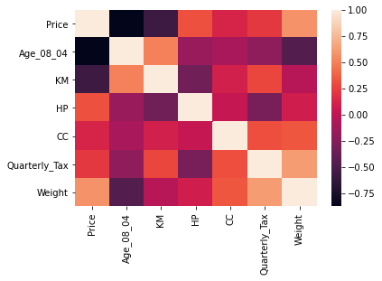
Age_08_04 is negatively correlated with price. KM is negatively correlated with price. Weight is positively correlated with price. KM is positively correlated with Age_08_04. Weight is positively correlated with quarterly tax.
Problem 4.4 Chemical Features of Wine.
Table 4.13 shows the PCA output on data (nonnormalized) in which the variables represent chemical characteristics of wine, and each case is a different wine.
4.4.a. The data are in the file Wine.csv. Consider the rows labeled “Proportion of Variance.” Explain why the value for PC1 is so much greater than that of any other column.
PC1 has a very high proportion of the variance because it is composed mostly of proline, which has a much larger scale than the other variables.
4.4.b. Comment on the use of normalization (standardization) in part (a).
Normalizing the data would equalize the scales and eliminate the undesired impact of scale on the calculation of the principal components.